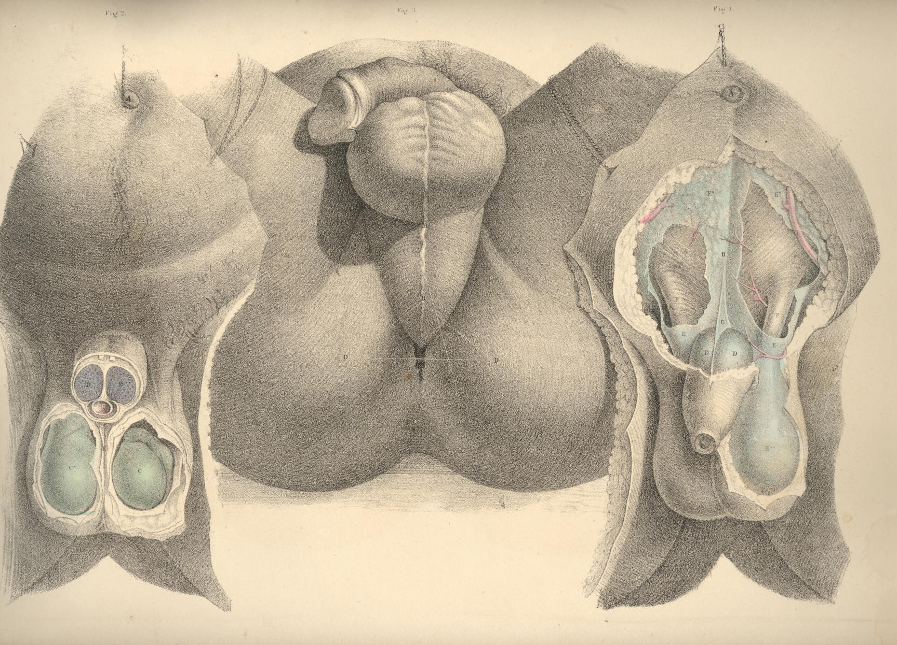
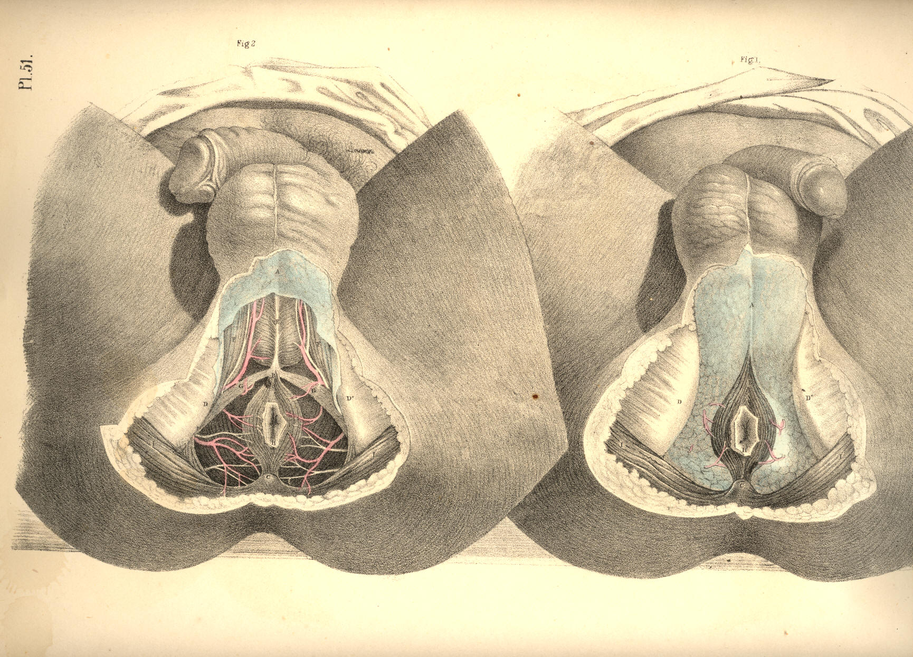

SURGICAL ANATOMY by JOSEPH MACLISE
COMMENTARY ON PLATES 50 & 51.
THE SURGICAL DISSECTION OF THE SUPERFICIAL STRUCTURES OF THE
MALE PERINAEUM.
The median line of the body is marked as the situation where the
opposite halves unite and constitute a perfect symmetrical figure. Every
structure--superficial as well as deep--which occupies the median line
is either single, by the union of halves, or dual, by the cleavage and
partition of halves. The two sides of the body being absolutely similar,
the median line at which they unite is therefore common to both. Union
along the median line is an occlusion taking place by the junction of
sides; and every hiatus or opening, whether normal or abnormal, which
happens at this line, signifies an omission in the process of central
union. The sexual peculiarities are the results of the operation of this
law, and all forms which are anomalous to either sex, may be interpreted
as gradations in the same process of development; a few of these latter
occasionally come under the notice of the surgeon.
The region which extends from the umbilicus to the point of the coccyx
is marked upon the cutaneous surface by a central raphe dividing the
hypogastrium, the penis, the scrotum, and the perinaeum respectively
into equal and similar sides. The umbilicus is a cicatrix formed after
the metamorphosis of a median foetal structure--the placental cord,
&c.
In the normal form, the meatus urinarius and the anus coincide with the
line of the median raphe, and signify omissions at stated intervals
along the line of central union. When between these intervals the
process of union happens likewise to be arrested, malformations are the
result; and of these the following are examples:--Extrusion of the
bladder at the hypogastrium is caused by a congenital hiatus at the
lower part of the linea alba, which is in the median line; Epispadias,
which is an urethral opening on the dorsum of the penis; and
Hypospadias, which is a similar opening on its under surface, are of the
same nature--namely, omissions in median union. Hermaphrodism may be
interpreted simply as a structural defect, compared to the normal form
of the male, and as a structural excess compared to that of the female.
Spina bifida is a congenital malformation or hiatus in union along the
median line of the sacrum or loins. As the process of union along the
median line may err by a defect or omission, so may it, on the other
hand, err by an excess of fulfilment, as, for example, when the urethra,
the vagina, or the anus are found to be imperforate. As the median line
of union thus seems to influence the form of the hypogastrium, the
genitals, and the perinaeum, the dissection of these parts has been
conducted accordingly.
By removing the skin and subjacent adipose membrane from the
hypogastrium, we expose the superficial fascia. This membrane, E E E*,
Fig. 1, Plate 50, is, in the middle line, adherent to B, the linea alba,
and thereby contributes to form the central depression which extends
from the navel to the pubes. The adipose tissue, which in some subjects
accumulates on either side of the linea alba, renders this depression
more marked in them. At the folds of the groin the fascia is found
adherent to Poupart's ligament, and this also accounts for the
depressions in both these localities. From the central linea alba to
which the fascia adheres, outwards on either side to the folds of both
groins, the membrane forms two distinct sacs, which droop down in front,
so as to invest the testicles, E**, and penis in a manner similar to
that of the skin covering these parts. As the two sacs of the
superficial fascia join each other at the line B, coinciding with the
linea alba, they form by that union the suspensory ligament of the
penis, which is a structure precisely median.
The superficial fascia having invested the testicles each in a distinct
sac, the adjacent sides of both these sacs, by joining together, form
the median septum scroti, E, Fig. 2, Plate 50. In the perinaeum, Fig. 1,
Plate 51, the fascia, A, may be traced from the back of the scrotum to
the anus. In this region the membrane is found to adhere laterally to
the rami of the ischium and pubes; whilst along the median perinaeal
line the two sacs of which the membrane is composed unite, as in the
scrotum, and form an imperfect septum. In front of the anus, beneath the
sphincter ani, the fascia degenerates into cellular membrane, one layer
of which is spread over the adipose tissue in the ischio-rectal space,
whilst its deeper and stronger layer unites with the deep perinaeal
fascia, and by this connexion separates the urethral from the anal
spaces. The superficial fascia of the hypogastrium, the scrotum, and the
perinaeum forming a continuous membrane, and being adherent to the
several parts above noticed, may be regarded as a general double sac,
which isolates the inguino-perinaeal region from the femoral and anal
regions, and hence it happens that when the urethra becomes ruptured,
the urine which is extravasated in the perinaeum, is allowed to pass
over the scrotum and the abdomen, involving these parts in consequent
inflammation, whilst the thighs and anal space are exempt. The tunicae
vaginales, which form the immediate coverings of the testicles, cannot
be entered by the urine, as they are distinct sacs originally protruded
from the abdomen. It is in consequence of the imperfect state of the
inguino-perinaeal septum of the fascia, that urine effused into one of
the sacs is allowed to enter the other.
Like all the other structures which join on either side of the median
line, the penis appears as a symmetrical organ, D D, Fig. 2, Plate 50.
While viewed in section, its two corpora cavernosa are seen to unite
anteriorly, and by this union to form a septum "pectiniforme;"
posteriorly they remain distinct and lateral, F F, Fig. 2, Plate 51,
being attached to the ischio-pubic rami as the crura penis. The urethra,
B, Fig. 2, Plate 50, is also composed of two sides, united along the
median line, but forming between them a canal by the cleavage and
partition of the urethral septum. All the other structures of the
perinaeum will be seen to be either double and lateral, or single and
median, according as they stand apart from, or approach, or occupy the
central line.
The perinaeum, Figs. 1, 2, Plate 51, is that space which is bounded
above by the arch of the pubes, behind by C, the os coccygis, and the
lower borders of, I I, the glutaei muscles and sacro-sciatic ligaments,
and laterally by D D, the ischiatic tuberosities. The osseous boundaries
can be felt through the integuments. Between the back of the scrotum and
the anus the perinaeum swells on both sides of the raphe, A B, Fig. 3,
Plate 50, and assumes a form corresponding with the bag of the
superficial fascia which encloses the structures connected with the
urethra. The anus is centrally situated in the depression formed between
D D, the ischiatic tuberosities, and the double folds of the nates.
The perinaeum, Fig. 3, Plate 50, is, for surgical purposes, described as
divisible into two spaces (anterior and posterior) by a transverse line
drawn from one tuber ischii, D, to the other, D, and crossing in front
of the anus. The anterior space, A D D, contains the urethra; the
posterior space, D D C, contains the rectum. The central raphe, A B C,
traverses both these spaces. The anterior or urethral space is (while
viewed in reference to its osseous boundaries) triangular in shape, the
apex being formed by the pubic symphysis beneath A, whilst two lines
drawn from A to D D, would coincide with the ischio-pubic rami which
form its sides. The raphe in the anterior space indicates the central
position of the urethra, as may be ascertained by passing a sound into
the bladder, when the shaft of the instrument will be felt prominently
between the points A B. Behind the point B, the sound or staff sinks
deeper in the perinaeum as it follows the curve of the urethra towards
the bladder, and becomes overlaid by the bulb, &c.
The ischiatic tuberosities, D D, Fig. 3, Plate 50, are, in all subjects,
sufficiently prominent to be felt through the integuments, &c.; and
the
line which, when drawn from one to the other, serves to divide the two
perinaeal spaces, forms the base of the anterior one. In well-formed
subjects, the anterior space is equiangular, the base being equal to
each side; but according as the tuberosities approach the median line,
the base becomes narrowed, and the triangle is thereby rendered acute.
These circumstances influence the direction in which the first incision
in the lateral operation of lithotomy should be made. When the
tuberosity of the left ischium stands well apart from the perinaeal
centre, the line of incision, B E, Fig. 3, Plate 50, is carried
obliquely from above downwards and outwards; but in cases where the
tuberosity approaches the centre, the incision must necessarily be made
more vertical. The posterior perinaeal space may be described on the
surface by two lines drawn from D D, the ischiatic tuberosities, to C,
the point of the coccyx, whilst the transverse line between D and D
bounds it above.
By removing the integument and superficial fascia, we expose the
superficial vessels and nerves, together with the muscles in the
neighbourhood of the urethra and the anus. The accelerator urinae, E,
Fig. 2, Plate 51, which embraces the urethra, and the sphincter ani, B
C, which surrounds the anus, H, occupy the median line, and are divided
each into halves by a central tendon, E B C, which traverses the
perinaeum from before backwards, to the point of the coccyx. On either
side of the anus, in the ischio-rectal space, D D, Fig. 1, Plate 51, is
found a considerable quantity of granular adipose tissue, traversed by
the inferior haemorrhoidal arteries and nerves-branches of the pudic
artery and nerve.
In front of the anus are seen two small muscles (transversae perinaei),
G G, Fig. 2, Plate 51, each arising from the tuber ischii of its own
side, and the two becoming inserted into, B, the central tendon. These
transverse muscles serve to mark the boundary between the anterior and
posterior perinaeal spaces. Behind each muscle is found a small artery,
crossing to the median line. The left transverse muscle and artery are
always divided in the lateral operation of lithotomy. On the outer sides
of the anterior perinaeal space are seen the erectores penis muscles, F
F, overlaying the crura penis. Between each muscle and the accelerator
urinae, the superficialis perinaei artery and nerve course forwards to
the scrotum, &c.
The perinaeal muscles having been brought fully into view, Plate 52,
Fig. 1, their symmetrical arrangement on both sides of the median line
at once strikes the attention. On either side of the anterior space
appears a small angular interval, L, formed between B, the accelerator
urinae, D, the erector penis, and E, the transverse muscle. Along the
surface of this interval, the superficial perinaeal artery and nerve are
seen to pass forwards; and deep in it, beneath these, may also be
observed, L, the artery of the bulb, arising from the pudic, and
crossing inwards, under cover of the anterior layer of the membrane
named the deep perinaeal fascia. The first incision in the lateral
operation of lithotomy is commenced over the inferior inner angle of
this interval.
The muscles occupying the anterior perinaeal space require to be
removed, Fig. 1, Plate 53, in order to expose the urethra, B M, the crus
penis, D, and the deep perinaeal fascia. The fascia will be now seen
stretched across the subpubic triangular space, reaching from one
ischio-pubic ramus to the other, whilst by its lower border,
corresponding with the line of the transversae perinaei muscles, it
becomes continuous with the superficial fascia, in the manner before
described. The deep perinaeal fascia (triangular ligament) encloses
between its two layers, C E, on either side of the urethra, the pudic
artery, the artery of the bulb, Cowper's glands, and some muscular
fibres occasionally to be met with, to which the name "Compressor
urethrae" has been assigned. At this stage of the dissection, as the
principal vessels and parts composed of erectile tissue are now in view,
their relative situations should be well noticed, so as to avoid
wounding them in the several cutting operations required to be performed
in their vicinity.
Along the median line (marked by the raphe) from the scrotum to the
coccyx, and close to this line on either side, the vessels are
unimportant as to size. The urethra lies along the middle line in the
anterior perinaeal space; the rectum occupies the middle in the
posterior space. When either of these parts specially requires to be
incised--the urethra for impassable stricture, &c., and the lower
part
of the rectum for fistula in ano--the operation may be performed
without fear of inducing dangerous arterial haemorrhage. With the object
of preserving from injury these important parts, deep incisions at, or
approaching to, the middle line must be avoided. The outer
(ischio-pubic) boundary of the perinaeum is the line along which the
pudic artery passes. The anterior half of this boundary supports also
the crus penis; hence, therefore, in order to avoid these, all deep
incisions should be made parallel to, but removed to a proper distance
from this situation. The structures placed at the middle line, B M F,
Fig. 2, Plate 52, and those in connexion with the left perinaeal
boundary, D G L, require (in order to insure the safety of these parts)
that the line of incision necessary to gain access to the neck of the
bladder in lithotomy should be made through the left side of the
perinaeum from a point midway between M, the bulb, and D, crus penis
above, to a point, K, midway between the anus, F, and tuber ischii, G,
below. As the upper end of this incision is commenced over the situation
of the superficial perinaeal artery and the artery of the bulb, the
knife at this place should only divide the skin and superficial fascia.
The lower end, K, just clears the outer side of the dilated lower part
of the rectum. The middle of the incision is over the left lobe of the
prostate gland and neck of the bladder, which parts, together with the
membranous portion of the urethra, are still concealed by the deep
perinaeal fascia, the structures between its layers, and the anterior
fibres of K, the levator ani muscle. The incision, if made in due
reference to the relative situation of the parts above noticed, will
leave them untouched; but when the pudic artery, or some one of its
branches, deviates from its ordinary course and crosses the line of
incision, a serious haemorrhage will ensue, despite the anatomical
knowledge of the most experienced operator. When it is requisite to
divide the superficial and deep sphincter ani as in the operation for
complete fistula in ano, if the incision be made transversely in the
ischio-rectal fossa, the haemorrhoidal arteries and nerves converging
towards the anus will be the more likely to escape being wounded.
DESCRIPTION OF THE FIGURES OF PLATES 50 & 51.
PLATE 50.
FIGURE 1.
A. The umbilicus.
B. The linea alba.
C. The suspensory ligament of the penis.
D D. The two corpora cavernosa penis.
E E**. The hypogastric and scrotal superficial fascia.
F F. The spermatic cords.
FIGURE 2.
A. The umbilicus.
B. The urethra.
C*. The tunica vaginalis; c,
the testicle invested by the tunic.
D D. The corpora cavernosa seen in section.
E. The scrotal raphe and septum scroti.
FIGURE 3.
A B. The perinaeal raphe.
C. The place of the coccyx.
D D. The projections of the ischiatic tuberosities.
BE. The line of section in lithotomy.

| Figure 2 |
Figure 3 |
Figure 1. |
Plate 50
PLATE 51.
FIGURE 1.
A. The superficial fascia covering the urethral space.
B. The sphincter ani.
C. The coccyx.
D D. The right and left ischiatic tuberosities.
H. The anus.
I I. The glutei muscles.
FIGURE 2.
A, B, C, D, H, I. The same parts as in Fig. 1.
E. The accelerator urinae muscle.
F F. Right and left erector penis muscle.
G G. Right and left transverse muscle.

Plate 51
COMMENTARY ON PLATES 52
& 53